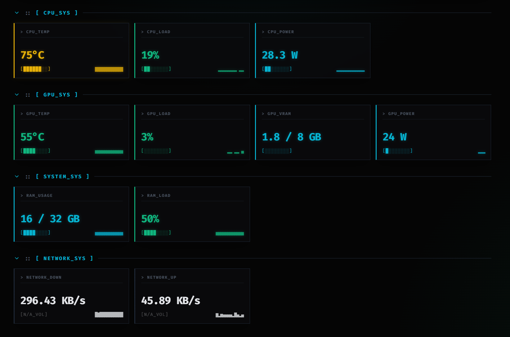

Hardware
Monitoring.
A Windows utility that shows hardware stats in the tray icon, on the desktop, inside supported games through RTSS, and in a local browser dashboard you can open from your phone.
- Separate CPU and GPU temperature tray icons
- Customizable desktop OSD with font, shadow, outline, and layout controls
- LAN dashboard and read-only local API for browser and phone viewing
- Direct integration with RivaTuner Statistics Server for in-game overlays

Deployment Protocol
Quick Setup
- Install the
.NET 10 Desktop Runtime. - Run
PCStatsTray.exe. - Right-click the tray icon and open
OSD Settings. - Turn on
Desktop OSDfor desktop metrics. - Turn on
RTSS OSD (Games)for in-game output if RTSS is installed and running. - Turn on
Enable LAN Dashboardif you want phone or browser access on your local network.
Output Paths
LAN Dashboard + RTSS
PC Stats Tray collects the hardware data once, then reuses that snapshot across the tray, desktop OSD, RTSS output, and the local LAN dashboard.
The LAN dashboard serves a simple browser UI plus a read-only JSON API on your local network. RTSS remains the separate renderer used for in-game overlay drawing.
Feature Set
Main Features
Tray Stats
Show CPU and GPU temperatures directly in the tray.
Desktop OSD
Show the selected metrics on the desktop with configurable text, layout, and styling.
RTSS Output
Send the selected metrics to RTSS for supported in-game overlays.
LAN Dashboard
Open a phone-friendly local dashboard from another device on the same network.
Local API
Expose the current metric snapshot through simple read-only local endpoints.
Quick Control
Open settings, toggle outputs, and launch the dashboard from tray menu actions and hotkeys.
Visual Output
Overlay, Dashboard, and Settings
